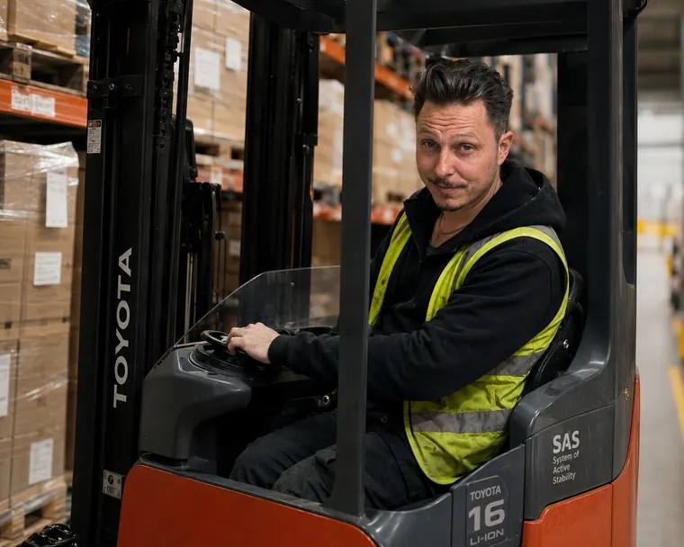
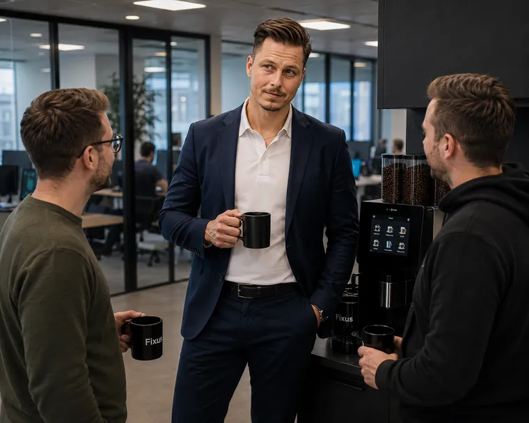
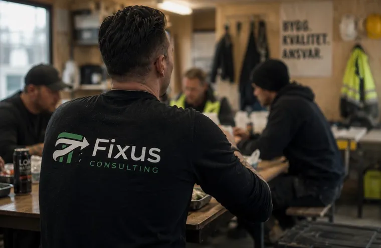
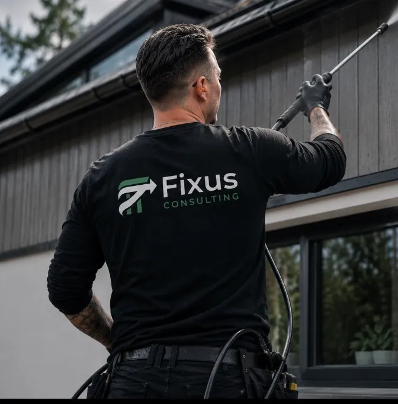
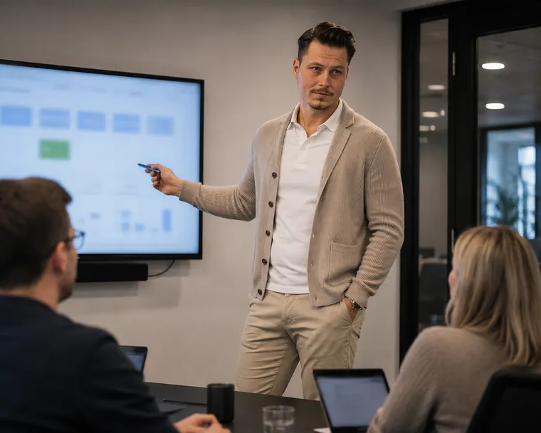
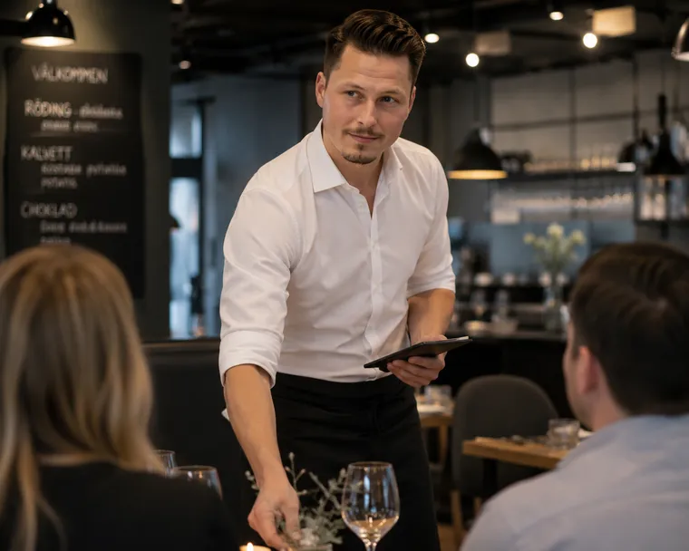

Operativ förstärkning
När en person saknas i teamet och arbetet måste fortsätta.
Fixus Consulting kombinerar operativt arbete, arbetsmiljöförståelse, förändringsledning och verksamhetsutveckling — direkt på plats i teamet.
De bästa förbättringarna börjar med förståelse. Därför arbetar vi i verksamheten, tillsammans med människorna som driver den varje dag.
Pierre pratar lika naturligt med VD, arbetsledare, skyddsombud, montör och lagerpersonal — och bygger förtroende åt båda håll. Det ger beslut grundade i en helhetsbild av hur arbetet faktiskt fungerar.
Täcker upp när någon saknas i teamet
Avlastning i det dagliga arbetet
Förståelse för hur arbetet faktiskt fungerar
En snabbare och tryggare väg in för nya medarbetare
Hållbara arbetsplatser där människor presterar över tid
Rutiner och arbetssätt som fungerar i praktiken
Förbättringar som genomförs i vardagen — inte bara föreslås
En helhetsbild som binder ihop golv, ledning och beslut
Bemanning fyller en stol. Den klassiska konsulten arbetar vid sidan av. Fixus arbetar mitt i — och stannar i vardagen tills förbättringen sitter.
→ Resultatet: en partner som både kliver in och lyfter — utan att ni behöver välja mellan händer och huvud.
Samma person kan börja med att täcka en lucka — och bidra till varaktig förbättring på vägen.
När en person saknas i teamet och arbetet måste fortsätta.
När arbetsledare eller chef behöver avlastning i vardagen.
När nya medarbetare tar för lång tid att få in i arbetet.
När ni känner att något kan fungera bättre — men vardagen inte ger tid att förstå vad.
När idéer finns men ingen hinner driva dem i praktiken.
”Jag arbetar i verksamheten, inte bredvid den.”
Så fungerar ett uppdrag →Pierre Nilsson har erfarenhet från restaurang, lager och montering, industri och logistik, fastighetsservice, arbetsmiljö, IT-projektledning, agil coachning och organisationsutveckling. Det gör att han snabbt förstår både människor, processer och verksamhetslogik.
Han rör sig lika naturligt på golvet som i ledningsrummet och bygger förtroende åt båda håll — så att beslut kan vila på en helhetsbild av hur arbetet faktiskt fungerar.
Ledning och verksamhetsutveckling — men lika hemma på restaurang, lager, fastighet och i hantverket. Fixus rör sig genom hela verksamheten.






Förstå före förändra. En jordnära modell för dig som vill ha resultat som håller — inte bara presentationer.
Ni har en lucka, ett tryck i teamet eller ett förbättringsbehov som inte får tid.
Pierre går in i verksamheten och arbetar där behovet finns — i det dagliga flödet, nära teamet.
Genom att arbeta nära teamet växer en förståelse för flöden, rutiner, arbetsmiljö och vad som skulle stärka vardagen.
Mindre förbättringar sker direkt i vardagen. Större förändringar förbereds tillsammans med teamet.
Ni får en tydlig helhetsbild av nuläget, vad som kan stärkas och konkreta nästa steg — förankrade i hur arbetet faktiskt fungerar.
Från ren operativ täckning till faktisk verksamhetsutveckling. Välj nivån som matchar behovet — uppdraget kan växa under tiden.
För kunden som behöver täcka en operativ lucka.
För kunden som behöver förstärkning med ledarskaps- och strukturförmåga.
För kunden som vill använda inhyrningen för faktisk verksamhetsutveckling.
Priset sätts utifrån uppdragets nivå — inte en fast prislista. Vi sätter ramen tillsammans i ett första samtal.
Operativ nivå — hur djupt i det dagliga arbetet rollen går.
Ansvarsnivå — från avlastning till faktiskt arbetsledningsansvar.
Uppdragets längd — kort insats eller löpande närvaro över tid.
Arbetsledning — om uppdraget kräver att leda och prioritera andra.
Struktur & förbättring — om kartläggning och förbättringsarbete ingår.
Beskriv läget så återkommer vi med ett tydligt upplägg, en rimlig nivå och vad ni får tillbaka.
Begär offert →Boka ett första samtal så ser vi om Fixus Consulting passar ert behov.
Kostnadsfritt och förutsättningslöst — vi reder ut behovet tillsammans.